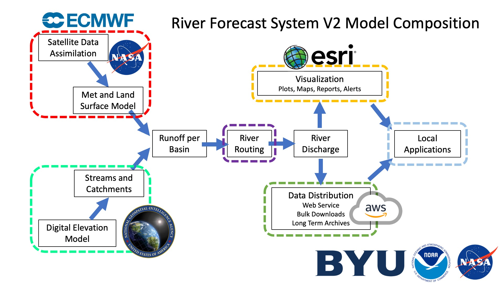

Le but de cette page est de fournir un aperçu du Système de Prévision Fluviale (RFS), y compris ses entrées et sorties. Si votre intérêt principal est d’utiliser les données, vous pouvez passer cette page et aller directement à la section suivante.
Le graphique suivant donne un aperçu de la formation du RFS.

Entrées
Le Système de Prévision Fluviale (RFS) repose sur trois entrées principales, comme illustré dans le graphique :
-
Hydrographie provenant de TDX-Hydro
Le réseau fluvial utilisé par le RFS est basé sur l’hydrographie dérivée des données d’élévation numérique de TDX-Hydro. Pour préparer ces données pour le RFS, le réseau hydrographique subit plusieurs modifications et étapes de post-traitement, qui sont documentées dans le répertoire TDX-Hydro Post-Processing. -
Modèles de surface terrestre rétrospectifs (ERA5)
Les données historiques de débit sont fournies par ERA5, un produit de réanalyse global du Centre Européen pour les Prévisions Météorologiques à Moyen Terme (ECMWF). -
Modèles de surface terrestre de prévision (IFS)
Les prévisions de débit futur sont générées à l’aide du Système de Prévision Intégrée (IFS) de l’ECMWF.
Les données de débit provenant à la fois d’ERA5 et de l’IFS sont converties en volumes d’écoulement à l’aide des outils du répertoire basininflow.
Le tableau suivant résume les principaux jeux de données d’entrée utilisés par le RFS :
| Nom | DOI | Type | Producteur | Licence |
|---|---|---|---|---|
| ERA5 | DOI | Modèle de Surface Terrestre de Réanalyse | ECMWF | Licence Copernicus - Gratuit pour usage commercial et non commercial avec attribution |
| TDX-Hydro | Lien | Hydrographie des Rivières et Bassins | NGA | Licence TDX-Hydro - Publique, fournie "telle quelle" sans garantie |
| Integrated Forecast System 48R1 | Lien | Modèle de Surface Terrestre de Prévision | ECMWF | Licence payante requise |